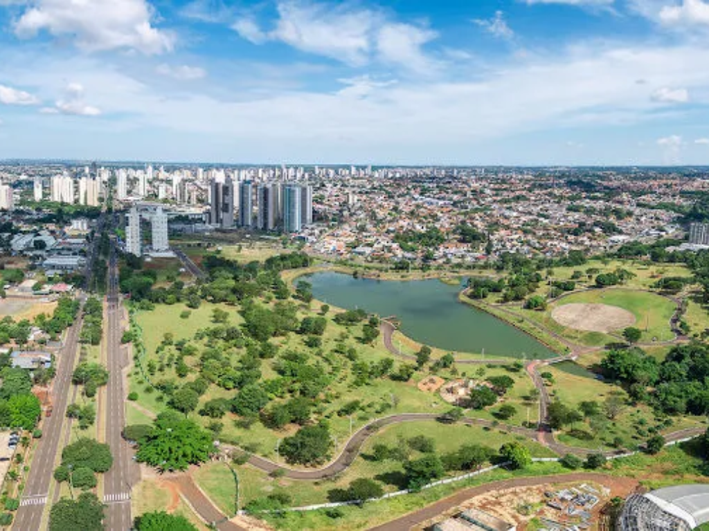

Mato Grosso do Sul é um estado localizado na região Centro-Oeste do Brasil, fazendo fronteira com o Paraguai e a Bolívia. Sua capital é Campo Grande. O estado é conhecido por abrigar parte do Pantanal, uma das maiores planícies alagáveis do mundo, e por suas belezas naturais. A economia sul-mato-grossense é baseada na agropecuária, com destaque para a produção de soja, milho e carne bovina.

Voltar